CONSUMPTION Of ANIMATED SHORT FILMS BY STUDENTS
Among all these student animated films, what particularly caught my attention was the the simplistic and minimalist art style. One of the main reasons that could have contributed to this would realistically be due to practicality, making it easier to animate.
videos accessed 22/3
UNDER THIS LUMINOUS SKY Sheridan College 2022, Emily XU
LAST SUMMER, GOBELINS 2022 Nicola BERNARDI, Alessandra DE STEFANO, Gabriela LEWANDOWSKA, Chloé VAN BECELAERE, Camille VAN DELFT, Elodie XIA, Cécile BLONDEL
SUNDOWN GOBELINS 2020 juliette BROCAL, Camille LETOUZE, Ana MONIZ, Ruitao SHE, Shanshan ZOU, Moïra MARGUIN
STUDIO GHIBLI; hayao miyazaki
Studio Ghibli's style in their films, under the creative direction of Hayao Miyazaki, is renowned for its masterful blend of intricate hand-drawn animation, richly detailed backgrounds, and compelling storytelling. Miyazaki's films often feature lush and fantastical worlds inhabited by memorable characters who embark on epic journeys of self-discovery and adventure. With a focus on themes of nature, humanity, and the interconnectedness of all things, Miyazaki's films evoke a sense of wonder and enchantment while addressing complex social and environmental issues. His animation style emphasizes fluid movement and expressive character animation, bringing the fantastical landscapes and imaginative creatures to life with meticulous attention to detail. Through his visually stunning and emotionally resonant storytelling, Miyazaki and Studio Ghibli have established themselves as one of the most beloved and influential animation studios in the world, captivating audiences of all ages with their timeless tales of magic, love, and courage.
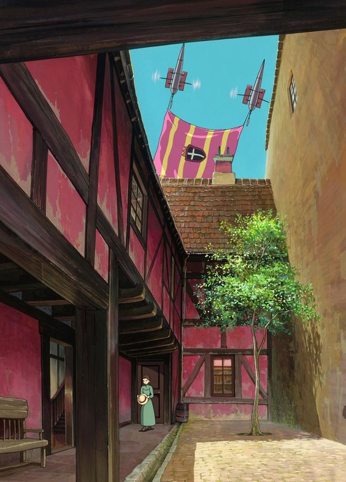
Howl's Moving Castle, 2004 ‧
AUDIENCE RECEPTION: 87% Rotten Tomatoes🍅 // 8.2/10 IMDb // 4/5 Common Sense Media
The perspective shot creates a sense of depth and space, drawing the viewer’s eye into the scene. The character standing near an open door in the distance serves as a focal point, adding a narrative element. The detailed visibility of both the foreground and background offers context to the setting, providing an intimate view of the character while also showcasing the architectural details and environment around them. The vibrant colours of the buildings and clotheslines contrast with the muted background, further enhancing the visual appeal. Overall, these techniques work together to create a visually engaging scene that tells a story and invites the viewer to explore the setting.
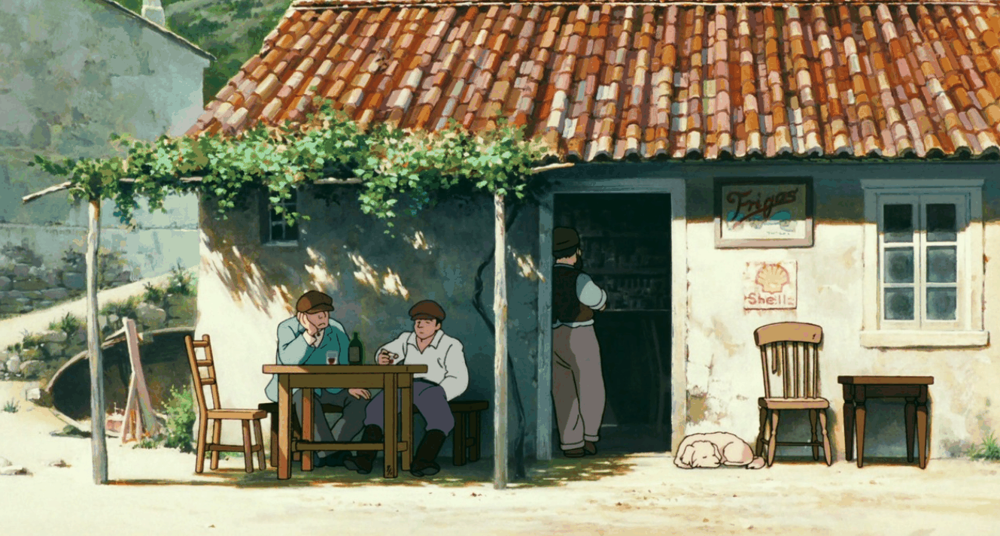
Porco Rosso, 1992
AUDIENCE RECEPTION: 96% Rotten Tomatoes🍅 // 7.7/10 IMDb // 83% Metacritic
The shot size is a wide, establishing shot that captures an entire scene at a rustic outdoor café, providing a sense of the setting and atmosphere. The use of color is notable, with warm, earthy tones that evoke a sense of nostalgia and comfort. The props, such as the tables, chairs, and building, are detailed and unique, contributing to the whimsical and fantastical aesthetic of the film. The characters are drawn in a simplistic style, a convention of Studio Ghibli, which allows the audience to focus on the story and emotions
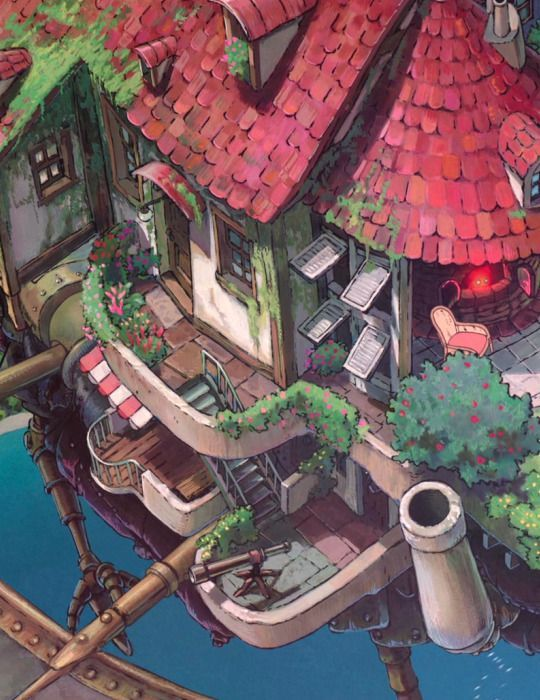
Howl's Moving Castle, 2004 ‧
AUDIENCE RECEPTION: 87% Rotten Tomatoes🍅 // 8.2/10 IMDb // 4/5 Common Sense Media
The whimsical architecture of the houses and it's rise above the ground suggest otherwordly setting introduce elements of fantasy, enhancing the magical realism genre that Studio Ghibli is known for.
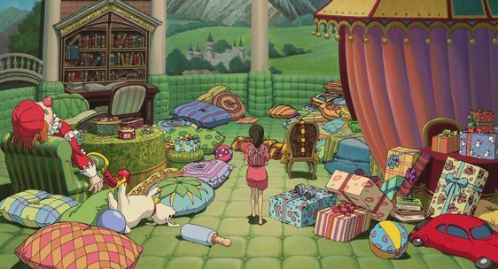
Spirited Away, 2001 AUDIENCE RECEPTION: 96% Rotten Tomatoes🍅 // 8.6/10 IMDb // 5/5 Common Sense Media
Studio Ghibli uses shot size to depict a cluttered setting. The wide shot captures the entire room filled with various objects, creating a sense of chaos and abundance. This clutter is not just random; each prop in the scene contributes to the narrative, revealing aspects of the characters’ lives and their environment. The detailed and prop-filled scenes are a staple in Studio Ghibli films, adding depth and richness to the visual storytelling. They create an immersive world that invites viewers to explore and discover, enhancing the overall cinematic experience.
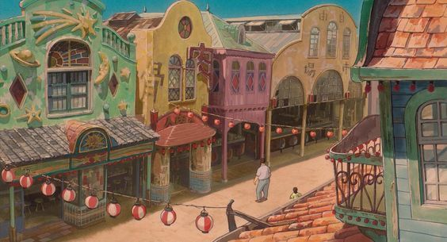
Spirited Away, 2001 AUDIENCE RECEPTION: 96% Rotten Tomatoes🍅 // 8.6/10 IMDb // 5/5 Common Sense Media
Unique for their Meiji-era style, blending traditional Meiji architecture with a more western style. Much of the inspiration for the movie’s buildings came from Hayao Miyazaki’s love of the Edo-Tokyo Open Air Architectural Museum in Japan. Another source of inspiration is the Taiwanese town of Jiufen, which has a strong historical weight and was once the center of Taiwan’s gold rush. These real-world locations helped shape the fantastical and immersive world of “Spirited Away”.
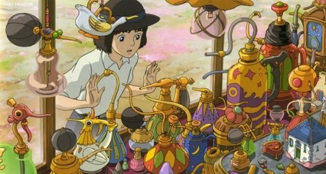
The Day I Bought a Star, 2006
AUDIENCE RECEPTION: 8.2/10 IMDb / 3.7/5Letterboxd
Media code of mis en scene; specifically use of props are used to highlight the othe-rworldy and unrealistic items that are featured in screenshot above
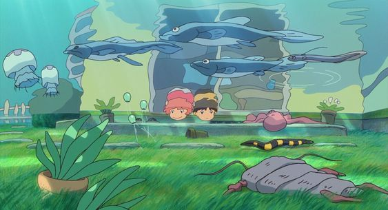
Ponyo, 2008 ‧
AUDIENCE RECEPTION: 91% Rotten Tomatoes🍅 // 7.6/10 IMDb // 4/5 Common Sense Media
The media codes, such as the rich colour palette that is light in nature combined with the intricate detailing enhances the fantastical setting. Additionally the strategic of the absence of bold shadow, suggest a more lighthearted scene and atmosphere. These elements work together to create a visually stunning and narratively engaging image
CONVENTIONS OF STUDIO GHIBLI.
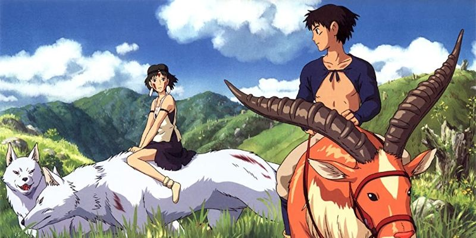
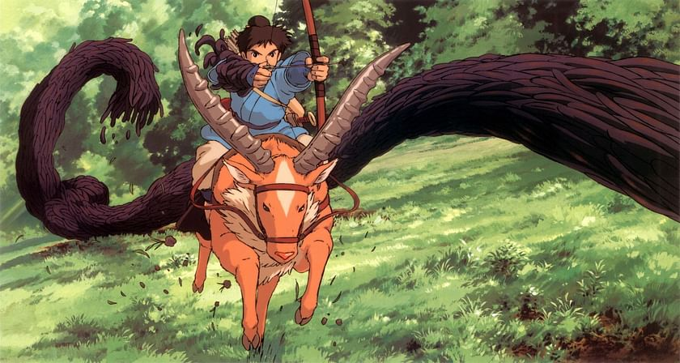
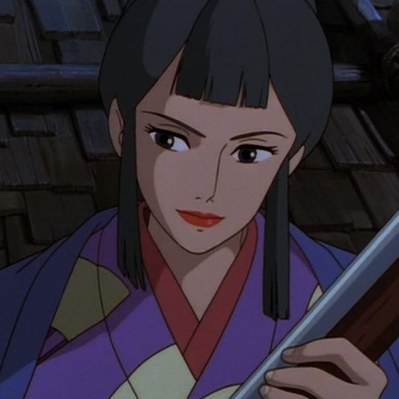
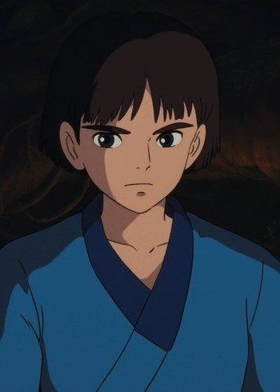
COSTUMES
example: PRINCESS MONONOKE
AUDIENCE RECEPTION: 93% Rotten Tomatoes🍅 // 8.3/10 IMDb // 5/5 Common Sense Media
HOW IS CONVENTION USED TO ENGAGE AUDIENCES? Enhances character development, world-building, and storytelling. Each costume is meticulously designed to reflect the personality, culture, and role of the character wearing it, providing visual cues that deepen our understanding of their motivations and relationships. The costumes worn by each character in the film are meticulously crafted to reflect their cultural background, social status, and personal beliefs. From the intricate garments of the forest spirits to the rugged attire of the ironworkers, every costume serves to establish the diverse and immersive world of the film. Additionally, costume changes throughout the story signify character development and pivotal moments in the narrative, allowing audiences to track the progression of the story and the evolution of the characters' relationships.
HOW DO AUDIENCES USE CONVENTION TO READ MEANING? Able read meaning by interpreting the symbolism and cultural significance imbued within each costume. For example, the elaborate attire of Lady Eboshi may signify her power and authority, while the simple garments of Ashitaka convey his humility and connection to nature. Furthermore, costume changes throughout the story often coincide with key moments of character growth or transformation, allowing audiences to track the emotional arc of the characters and understand the deeper themes explored in the film.
HOW WOULD I INCOPORATE THIS CONVENTION IN MY OWN PRODUCTION DESIGN? Could utilise costumes of characters to be able to enhance worldbuilding and act as visual cues for information about the character (showing not telling). making them more believable and tangible to the readers.
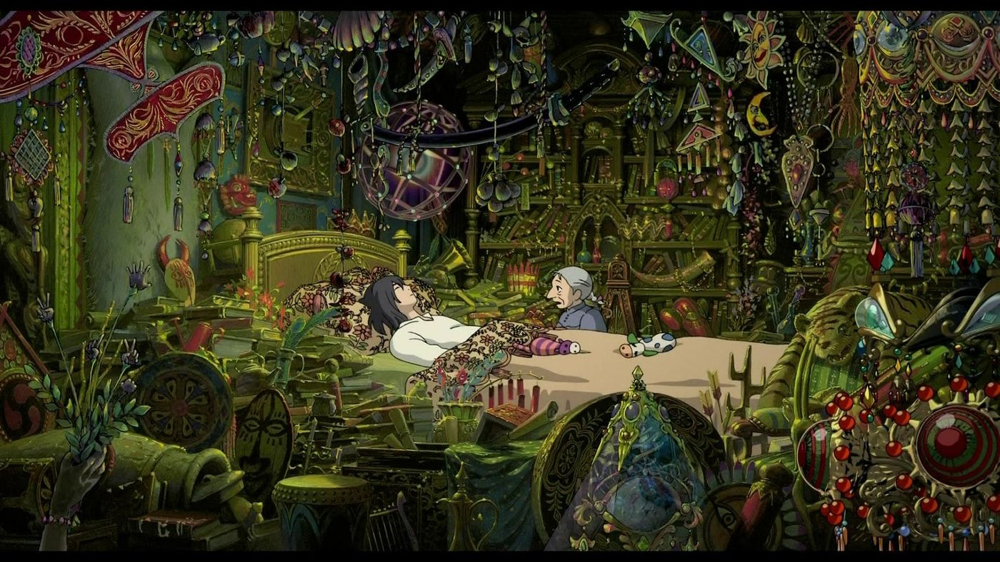
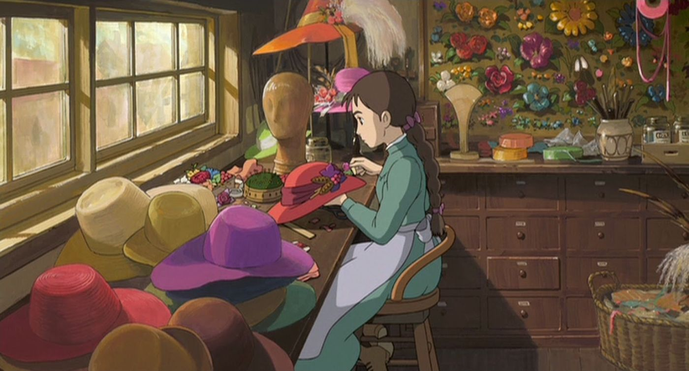
PROPS & OBJECTS (CLUTTERED, RICH SETTINGS)
example: HOWL'S MOVING CASTLE
AUDIENCE RECEPTION: 87% Rotten Tomatoes🍅 // 8.2/10 IMDb // 4/5 Common Sense Media
HOW IS CONVENTION USED TO ENGAGE AUDIENCES? Enriches the storytelling and creating immersive worlds filled with detail and depth. In "Howl's Moving Castle," the cluttered and rich backgrounds of Howl's bedroom and the moving castle itself are adorned with an array of whimsical props and objects that contribute to the film's enchanting atmosphere. From magical trinkets and spell books to peculiar gadgets and fantastical contraptions, each prop and object tells a story of its own, sparking curiosity and inviting viewers to explore the intricacies of Howl's world. Furthermore, the use of props and objects serves as visual cues that deepen our understanding of the characters and their motivations, as well as the magical nature of the world they inhabit.
HOW DO AUDIENCES USE CONVENTION TO READ MEANING? Ability to read meaning by interpreting the symbolism and significance of these items within the context of the story and characters. In "Howl's Moving Castle," the cluttered and eclectic assortment of objects in Howl's bedroom reflects his chaotic and eccentric personality, as well as his status as a powerful wizard with a penchant for collecting magical artifacts. Viewers can infer insights into Howl's character and motivations by analysing the various props and objects in his room, such as spell books, potion bottles, and mysterious gadgets, which hint at his magical abilities and interests. Similarly, in the second image below, audiences can glean meaning from the props and objects present. The room is filled with hats of different styles, colours, and designs, each representing a facet of Sophie's creativity and skill as a hat maker. The objects and tools used in the hat-making process, such as sewing needles, fabric swatches, and hat forms, symbolize Sophie's dedication to her craft and her journey of self-discovery throughout the film
HOW WOULD I INCOPORATE THIS CONVENTION IN MY OWN PRODUCTION DESIGN? I could incorporate props by strategically placing certain objects in the background of character settings, like their room, or environment that can reflect their personality, giving depth to the character.
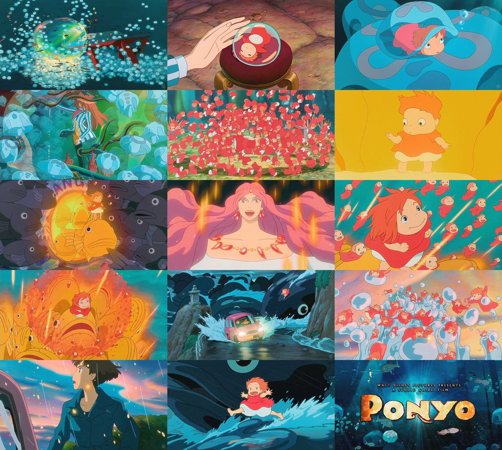
COLOUR
example: PONYO
AUDIENCE RECEPTION: 91% Rotten Tomatoes🍅 // 7.6/10 IMDb // 4/5 Common Sense Media
HOW IS CONVENTION USED TO ENGAGE AUDIENCES? Engages audiences by creating visually captivating and emotionally resonant worlds. In "Ponyo," vibrant and saturated hues dominate the screen, infusing every frame with a sense of whimsy and enchantment. The use of bright, primary colours, such as the vivid blues of the ocean and the warm oranges of Ponyo's hair, evokes a feeling of joy and innocence, capturing the youthful exuberance of the film's titular character. Furthermore, the dynamic interplay of colors in the underwater scenes and magical moments reflects the fantastical nature of the story and adds to the sense of wonder and awe experienced by viewers. Through its masterful use of colour, "Ponyo" immerses audiences in a visually stunning world filled with beauty, magic, and imagination, captivating them from start to finish.
HOW DO AUDIENCES USE CONVENTION TO READ MEANING? By interpreting the symbolism and emotional associations of different colours within the context of the story and characters. For example, the vibrant blues of the ocean may symbolize freedom, adventure, and the vastness of the unknown, reflecting Ponyo's desire to explore the world beyond her underwater home. The warm yellows and oranges of Ponyo's hair may represent vitality, energy, and the transformative power of love, highlighting her spirited and adventurous nature. Additionally, shifts in color palette throughout the film may signify changes in mood, atmosphere, or character development, allowing audiences to track the emotional arc of the story and the growth of the characters.
HOW WOULD I INCOPORATE THIS CONVENTION IN MY OWN PRODUCTION DESIGN? Colour can be used to show meaning and provide context in my work. Further utilised to reflect genre
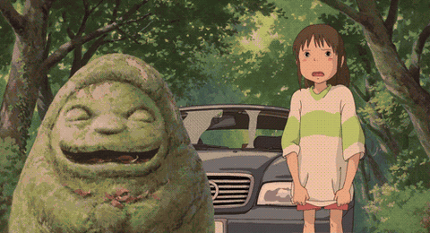
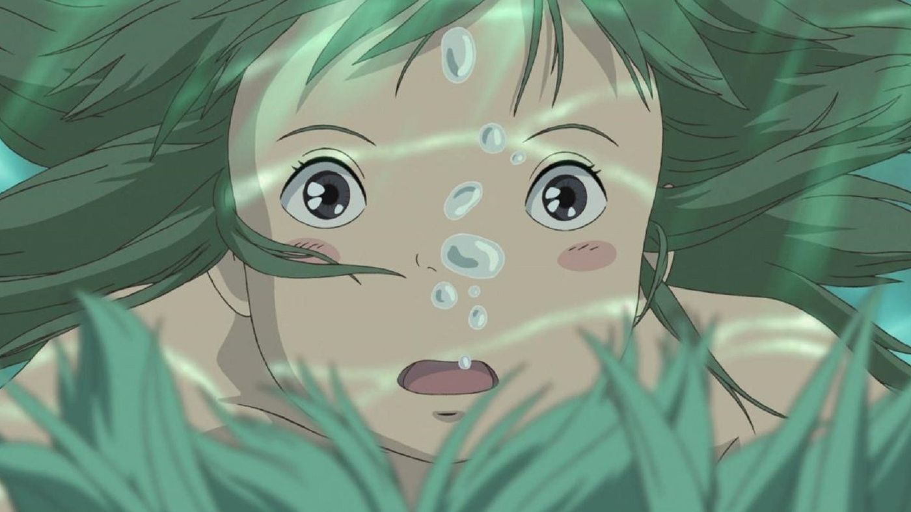
ACTING
example: SPIRITED AWAY
AUDIENCE RECEPTION: 96% Rotten Tomatoes🍅 // 8.6/10 IMDb // 5/5 Common Sense Media
HOW IS CONVENTION USED TO ENGAGE AUDIENCES? Through the portrayal of characters with expressive and dynamic performances. In "Spirited Away," characters exhibit exaggerated and cartoony expressions, as well as bouncier movements of themselves and objects, which contribute to the film's whimsical and fantastical atmosphere. Through these expressive performances, audiences are drawn into the magical world of the film and connect with the characters on an emotional level. Additionally, the bouncier movement of objects, such as the animated food and spirits, adds to the film's sense of wonder and enchantment, creating a visually engaging experience that captivates audiences of all ages.
HOW DO AUDIENCES USE CONVENTION TO READ MEANING? Able to read meaning by interpreting the behaviours and traits of characters within the context of the story. For example, Chihiro's childish and naive traits are portrayed through her exaggerated facial expressions, such as wide-eyed wonder and pouting lips, as well as her bouncy and unsteady movements. These acting choices communicate Chihiro's innocence, vulnerability, and lack of worldly experience, establishing her as a relatable and sympathetic protagonist. As Chihiro encounters various challenges and obstacles throughout the film, audiences witness her growth and development through changes in her acting, such as more confident expressions and determined movements. By paying attention to these subtle cues and character nuances, audiences can derive deeper meaning from Chihiro's journey and gain insight into the themes of courage, resilience, and self-discovery.
HOW WOULD I INCOPORATE THIS CONVENTION IN MY OWN PRODUCTION DESIGN? in moments of dialogue, discussion or simply in response to something exaggerated facial expressions in a cartoonish manner, adds depth.